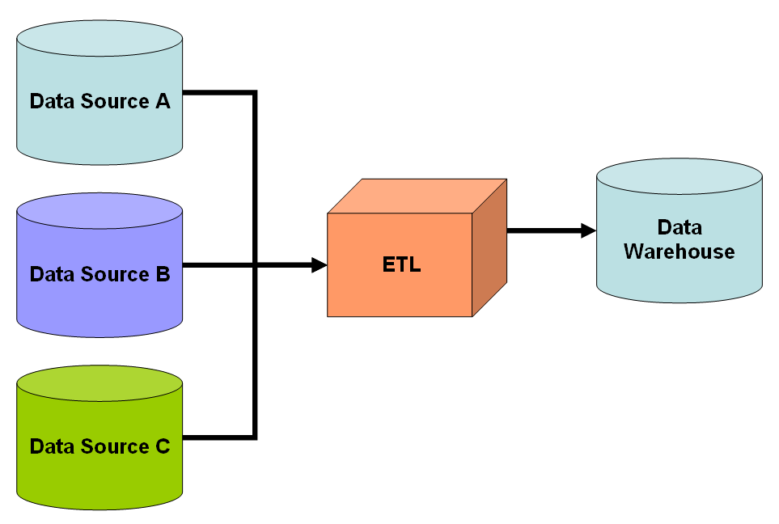
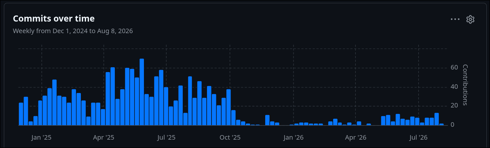

Eddie Cosma
CLEpy Meetup – August 11, 2026
Part 1

Transform can come before or after load.
Doing whatever you need to do to your data to make it usable for reporting or downstream applications. E.g.,
All kinds of technologies can be used to transform data…
awk can transform datavim can transform dataTo be robust, transformation workflows should be:
Frameworks developed to make transformations fit our criteria
Again, there are many more…
We are going to focus on dbt and SQLMesh.
Part 2
SELECT statements into a
dependency-ordered set of tables and views in your warehouseA model is one .sql file containing one SELECT. The file name is the table name.
-- models/staging/stg_orders.sql
select
id as order_id,
user_id as customer_id,
order_date,
status,
amount_cents / 100.0 as amount_usd
from raw.orders
where status != 'deleted'
dbt wraps this in DDL for you
create or replace view analytics.stg_orders as (
select ... /* your SELECT, verbatim */
);
dbt files are Jinja templates that happen to contain SQL. Before execution, dbt renders the template into a plain SQL string.
| Syntax | Meaning |
|---|---|
| {{ ... }} | Expression — renders a value into the SQL |
| {% ... %} | Statement — control flow, macro definitions, no output |
| {# ... #} | Comment — stripped before compilation |
ref and sourceTwo functions do most of the work in a real dbt project.
-- staging model reads a RAW table via source()
select *
from {{ source('jaffle', 'orders') }}
-- compiles to: from raw_jaffle.orders
-- downstream model reads another MODEL via ref()
select *
from {{ ref('stg_orders') }}
-- compiles to: from analytics_dev_eddie.stg_orders
ref() returns the right name for the current environment (dev vs. prod)ref() is also how dbt discovers the DAGA macro is a function that returns a SQL fragment. This is dbt's abstraction mechanism.
-- macros/cents_to_dollars.sql
{% macro cents_to_dollars(column_name, precision=2) %}
round({{ column_name }} / 100.0, {{ precision }})
{% endmacro %}
-- models/staging/stg_payments.sql
select
payment_id,
{{ cents_to_dollars('amount') }} as amount_usd,
{{ cents_to_dollars('tip') }} as tip_usd
from {{ source('stripe', 'payments') }}
Because it's a full templating language, you can generate SQL programmatically.
{% set payment_methods = ['credit_card', 'paypal', 'bank_transfer'] %}
select
order_id,
{% for method in payment_methods %}
sum(case when payment_method = '{{ method }}'
then amount_usd else 0 end) as {{ method }}_amount
{%- if not loop.last %},{% endif %}
{% endfor %}
from {{ ref('stg_payments') }}
group by 1
The same SELECT becomes a different physical object depending on config.
| Materialization | What dbt does |
|---|---|
| view | CREATE VIEW |
| table | CREATE TABLE AS, dropped and rebuilt each run |
| incremental | Insert/merge only new rows |
| ephemeral | Inlined as a CTE, never persisted |
{{ config(materialized='table') }}
select ...
Declare the raw sources, with freshness expectations and tests:
# models/staging/_sources.yml
version: 2
sources:
- name: jaffle
schema: raw_jaffle
tables:
- name: orders
freshness:
warn_after: {count: 12, period: hour}
error_after: {count: 24, period: hour}
loaded_at_field: _loaded_at
columns:
- name: id
data_tests:
- unique
- not_null
-- models/staging/stg_orders.sql
{{ config(materialized='view') }}
select
id as order_id,
user_id as customer_id,
cast(order_date as date) as order_date,
lower(status) as status,
{{ cents_to_dollars('amount_cents') }} as amount_usd
from {{ source('jaffle', 'orders') }}
where status != 'deleted'
Convention: stg_* models are 1:1 with a source table
-- models/marts/fct_customer_orders.sql
{{ config(materialized='table') }}
with orders as (
select * from {{ ref('stg_orders') }}
),
customers as (
select * from {{ ref('stg_customers') }}
)
select
c.customer_id,
c.customer_name,
count(o.order_id) as order_count,
sum(o.amount_usd) as lifetime_value,
min(o.order_date) as first_order_date
from customers c
left join orders o on o.customer_id = c.customer_id
group by 1, 2
Data tests — assertions run against real, built data.
# models/marts/_models.yml
models:
- name: fct_customer_orders
columns:
- name: customer_id
data_tests:
- unique
- not_null
- name: lifetime_value
data_tests:
- dbt_utils.accepted_range:
min_value: 0
Unit tests (dbt 1.8+) — fixed inputs, expected outputs, no warehouse data needed.
unit_tests:
- name: test_amount_conversion
model: stg_orders
given:
- input: source('jaffle', 'orders')
rows:
- {id: 1, amount_cents: 1050,
status: 'SHIPPED'}
expect:
rows:
- {order_id: 1, amount_usd: 10.50,
status: 'shipped'}
# build everything, in dependency order
$ dbt run
# run models + tests + seeds + snapshots together
$ dbt build
# just this model and everything downstream of it
$ dbt build --select stg_orders+
# only what changed vs. the last production run
$ dbt build --select "state:modified+" --state ./prod-artifacts
# generate and serve the docs site (DAG viewer)
$ dbt docs generate && dbt docs serve
{{ config(
materialized='incremental',
unique_key='order_id',
incremental_strategy='merge'
) }}
select * from {{ ref('stg_orders') }}
{% if is_incremental() %}
-- only on incremental runs, not the first build
where order_date > (select max(order_date) from {{ this }})
{% endif %}
max(order_date) from the target is a proxy for “what's missing”--full-refresh the whole table, or hand-write a one-offPart 3
The dbt era
A new foe has appeared?
Part 4
SQLMesh is built on SQLGlot, a pure-Python SQL parser, transpiler, and optimizer covering 20+ dialects.
>>> import sqlglot
>>> sqlglot.parse_one("SELECT a FROM tbl").sql()
'SELECT a FROM tbl'
>>> sqlglot.parse_one("SELECT a FROM tbl")
Select(expressions=[Column(this=Identifier(this=a))], from=From(...))
>>> sqlglot.transpile(
... "SELECT EPOCH_MS(1618088028295)", read="duckdb", write="snowflake"
... )
["SELECT TO_TIMESTAMP(1618088028295 / 1000)"]
A model is a SQL file too — but it opens with a declarative MODEL block.
MODEL (
name analytics.stg_orders,
kind VIEW,
cron '@daily',
grain order_id,
audits (
unique_values(columns := (order_id)),
not_null(columns := (order_id, customer_id))
)
);
SELECT
id::INT AS order_id,
user_id::INT AS customer_id,
order_date::DATE AS order_date,
LOWER(status) AS status,
amount_cents / 100.0 AS amount_usd
FROM raw.orders
WHERE status != 'deleted'
Note: no ref(). You write the real table name and SQLMesh
resolves it per environment — it knows what a table reference is.
Instead of materializations plus hand-written logic, you declare the semantics.
| Kind | Meaning |
|---|---|
| VIEW | A view, rebuilt on change |
| FULL | Rebuilt from scratch every run |
| INCREMENTAL_BY_TIME_RANGE | Rows belong to time intervals; SQLMesh tracks which intervals exist and fills gaps |
| INCREMENTAL_BY_UNIQUE_KEY | Upsert on a key |
| SCD_TYPE_2_BY_TIME / _COLUMN | Slowly changing dimension history, built in |
| SEED | A CSV loaded as a table |
| EMBEDDED | Inlined as a CTE (dbt's “ephemeral”) |
MODEL (
name analytics.fct_orders,
kind INCREMENTAL_BY_TIME_RANGE (
time_column order_date,
batch_size 30
),
start '2024-01-01',
cron '@daily',
grain order_id
);
SELECT *
FROM analytics.stg_orders
WHERE order_date BETWEEN @start_ds AND @end_ds
is_incremental() branch — the model runs the same way in dev and prod@start_ds / @end_ds are the interval being processed, supplied by the frameworksqlmesh plan --restate-model analytics.fct_orders --start 2026-03-01 --end 2026-03-31The idea that makes everything else work: separate the names people query from the tables that hold data.
If you've used Terraform, you already know this workflow.
$ sqlmesh plan dev
Differences from the `dev` environment:
Models:
└── Directly Modified: analytics.stg_orders
└── Indirectly Modified Children:
└── analytics.fct_orders
---
+++
@@ -3,6 +3,7 @@
order_date::DATE AS order_date,
+ LOWER(status) AS status,
amount_cents / 100.0 AS amount_usd
Directly Modified: analytics.stg_orders (Non-breaking)
└── analytics.fct_orders (Indirect Non-breaking)
Models needing backfill:
└── analytics.stg_orders: [2024-01-01 - 2026-08-10]
Apply - Backfill Tables [y/n]: y
Creating physical tables ━━━━━━━━━━ 100%
stg_orders [insert] ━━━━━━━━━━ 100%
Virtually updating 'dev' ━━━━━━━━━━ 100%
The target environment has been updated successfully
$ sqlmesh plan prod
Differences from the `prod` environment:
└── analytics.stg_orders (Non-breaking)
Apply - Virtual Update [y/n]: y
Virtually updating 'prod' ━━━━━━━━━━ 100%
The target environment has been updated successfully (0.4s)
SQLMesh diffs the AST, not the text, and classifies every change.
sqlmesh table_diff prod:dev analytics.fct_orders — row and column level data diff between two environments, before you merge
$ sqlmesh plan dev --start '2026-08-01' --end '2026-08-10'
$ sqlmesh table_diff prod:dev analytics.fct_orders --show-sample
Audits — assertions against built data (dbt's data tests), declared inline or reusable.
-- audits/no_negative_amounts.sql
AUDIT (
name assert_positive_amount,
dialect duckdb
);
SELECT *
FROM @this_model
WHERE amount_usd < 0
Unit tests — fixture in, expected out. Run in milliseconds against DuckDB, no warehouse needed.
test_stg_orders:
model: analytics.stg_orders
inputs:
raw.orders:
- id: 1
amount_cents: 1050
status: 'SHIPPED'
outputs:
query:
- order_id: 1
amount_usd: 10.50
status: 'shipped'
sqlmesh test runs unit tests; audits run automatically as part of
plan and run, and can block a promotion.
When SQL isn't enough, drop into Python — a first-class model type, not an escape hatch.
from sqlmesh import model, ExecutionContext
import pandas as pd
import typing as t
from datetime import datetime
@model(
"analytics.customer_segments",
columns={"customer_id": "int", "segment": "text"},
kind="FULL",
cron="@daily",
)
def execute(
context: ExecutionContext,
start: datetime,
end: datetime,
execution_time: datetime,
**kwargs: t.Any,
) -> pd.DataFrame:
table = context.resolve_table("analytics.fct_customer_orders")
df = context.fetchdf(f"SELECT customer_id, lifetime_value FROM {table}")
df["segment"] = pd.cut(df.lifetime_value, [0, 100, 1000, 1e9],
labels=["low", "mid", "whale"])
return df[["customer_id", "segment"]]
Python macros (@macro) also exist — but they manipulate the
SQL AST, so SQLMesh still understands the result. Jinja is supported for dbt compatibility.
cron — cadence is a property of the model, not of an external DAG you maintain in parallelsqlmesh run evaluates whatever is due, fills any missing intervals, and stops
$ sqlmesh run # run what's due, backfill any gaps
$ sqlmesh ui # browser IDE: editor, DAG, column-level lineage
$ sqlmesh dlt_refresh # / sqlmesh migrate, format, lint, audit, test ...
Migration isn't all-or-nothing — SQLMesh can read a dbt project directly.
# point SQLMesh at an existing dbt project
$ sqlmesh init -t dbt
$ sqlmesh plan
# refs, sources, macros, seeds, tests, and profiles.yml are read as-is
# or convert the project to native SQLMesh models
$ sqlmesh migrate
ref()s, and your dbt packagesPart 5
| dbt | SQLMesh | |
|---|---|---|
| SQL handling | Jinja text templating (v1); Rust SQL comprehension (v2/Fusion) | SQLGlot AST parsing from day one |
| Lineage | Model-to-model (column-level in Fusion/Cloud) | Column-level, in the OSS core |
| Change impact | You decide with --select; state:modified needs stored artifacts | Semantic diff auto-classifies breaking vs. non-breaking |
| Dev environments | Separate schema; rebuild what you want to test | Virtual environments; views repointed, near-zero cost |
| Incrementality | is_incremental() written by hand | Declarative model kinds; framework owns the logic |
| State | None — artifacts only | State DB tracks snapshots and loaded intervals |
| Backfills | Manual or --full-refresh | Gap detection + targeted restatement |
| Deployment | Rebuild in prod | Promote validated tables by repointing views |
| dbt | SQLMesh | |
|---|---|---|
| Testing | Data tests since day one; unit tests since 1.8 (2024) | Audits + unit tests, both early |
| Scheduling | External: Airflow, Dagster, dbt platform | Built-in per-model cron; integrates with Airflow/Dagster/Prefect |
| Portability | Adapter per warehouse; SQL is dialect-specific | Transpiles across 20+ dialects via SQLGlot |
| Python | Python models on some warehouses | Python models + AST-aware Python macros |
| License | Apache 2.0 (Core v1 and v2) | Apache 2.0 |
| Governance | Fivetran (post-merger, June 2026) | Linux Foundation (March 2026) |
| Ecosystem | Enormous: packages, adapters, integrations, jobs | Small but real; can run dbt projects |
| Learning curve | Low — it's just SQL files | Moderate — new mental model, thinner docs and Stack Overflow |

Weekly commits, SQLMesh repo — the cliff is the September 2025 acquisition.
Part 6
models/, _sources.yml, a staging model, a martdbt build — watch the DAG execute in dependency ordertarget/compiled/ — the Jinja is gone, it's just SQLdbt docs generate && dbt docs serve — the lineage graphsqlmesh plan on a fresh project — initial backfill, prod createdsqlmesh plan dev — read the semantic diff and the
Non-breaking classificationsqlmesh table_diff prod:dev — see the actual data deltasqlmesh plan prod — a virtual update. No rebuild. Secondssqlmesh ui — column-level lineageEddie Cosma · CLEpy · August 11, 2026